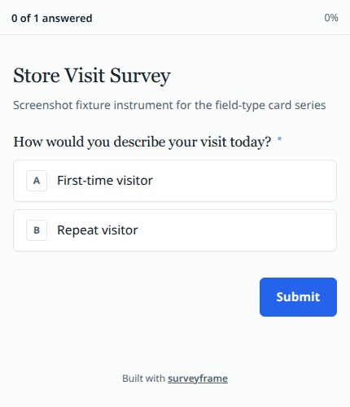
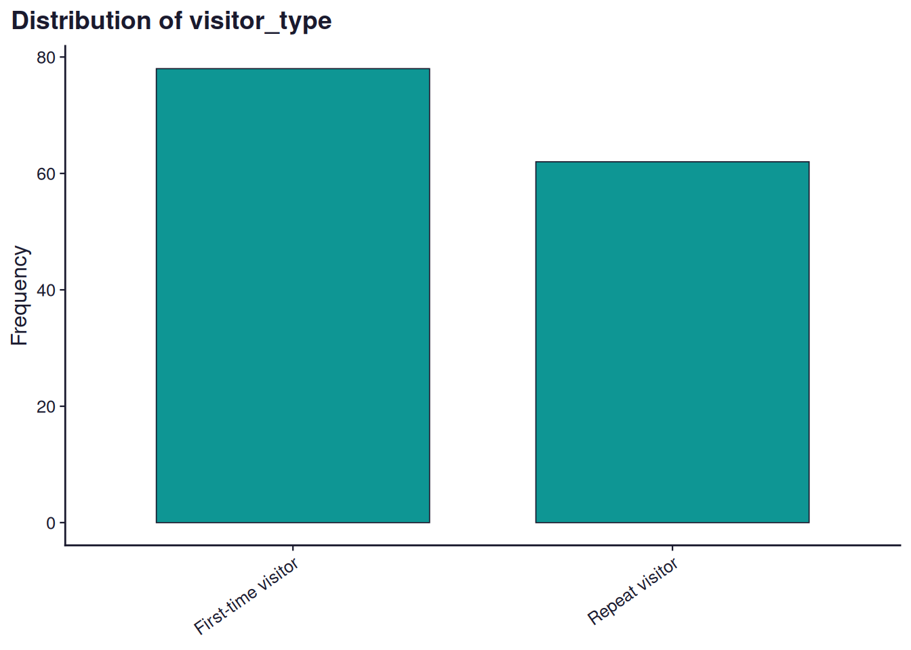

![]()
choices <- sf_choices(
"visit_freq",
values = c("first", "repeat"),
labels = c("First-time visitor", "Repeat visitor")
)
item <- sf_item(
id = "visitor_type",
label = "How would you describe your visit today?",
type = "single_choice",
choice_set = "visit_freq",
required = TRUE
)
instrument <- sf_instrument(
title = "Store Visit Survey",
version = "0.1.0",
components = list(choices, item)
)surveyframe Field Types: Single Choice
surveyframe
R packages
survey research
how-to
Declare a single_choice question in surveyframe and see the real codebook, exported survey, and analysis output it produces. Copy-pasteable R throughout.
Keywords
surveyframe, single_choice, R package, survey design, analysis plan, codebook, sf_item
TL;DR: single_choice captures one answer from a fixed list. This post declares one with sf_item(), shows the real codebook table it produces, the real exported question a respondent sees, and the real frequency table and chart that come out the other end when responses arrive. Every table and chart on this page, except the one screenshot of the exported survey, was generated by the R code shown, at render time, from surveyframe 0.3.3.
Try this yourself. Install surveyframe, paste the code blocks below into RStudio in order, and you will have a working instrument, a real exported survey, and a real analysis report before you reach the bottom of this page.
install.packages("surveyframe")
The case
You run a small store and want to know one thing about each visitor before you ask anything else: have they been here before? That single fact changes how you should read every other answer they give you. It is a single_choice question, because a visitor is either a first-time visitor or a repeat visitor, never both, never neither.
Declare the item
A single_choice item needs an id, a label, a choice_set, and whether it is required. The choice set is declared separately with sf_choices() and referenced by its id, not passed in directly.
That is the whole instrument for now: one choice set, one item. Everything below reads from this instrument object. Nothing is retyped.
See it as a codebook
codebook_report() turns the instrument into two tables: the items and their choice sets. This is real output from the instrument declared above, not a mock-up.
cb <- codebook_report(instrument, format = "md")| id | label | type | choice_set | scale_id | reverse | required |
|---|---|---|---|---|---|---|
| visitor_type | How would you describe your visit today? | single_choice | visit_freq | FALSE | TRUE |
| choice_set_id | value | label |
|---|---|---|
| visit_freq | first | First-time visitor |
| visit_freq | repeat | Repeat visitor |
If a column looks wrong here, for instance a label that reads badly or a choice_set id that does not match, this is the earliest and cheapest point to catch it. Nobody has answered anything yet.
Export it and see what a respondent sees
export_static_survey() writes a self-contained HTML file. Point output_path somewhere real when you run this yourself, for example "visitor_survey.html" in your project folder, and open it in a browser.
export_static_survey(
instrument,
output_path = "visitor_survey.html",
open = TRUE
)This is the one piece of this page that is a screenshot rather than live output, because the export is a separate HTML document, not something that renders inline in this page. What follows is that file, unedited, at phone width.

export_static_survey() for the visitor_type item: a progress indicator reading “0 of 1 answered”, the question marked required, two bordered option cards lettered A and B for “First-time visitor” and “Repeat visitor”, and a Submit button.Write the analysis plan before you collect anything
This is the part worth doing deliberately. The plan below is declared now, attached to the instrument, before a single response exists. method = "frequency" with roles = list(variable = "visitor_type") is what tells surveyframe which table and chart to produce later. Why this order matters is its own post if you want the fuller argument.
instrument <- sf_instrument(
title = "Store Visit Survey",
version = "0.1.0",
components = list(choices, item),
analysis_plan = list(
list(
id = "RQ1",
research_question = "What proportion of visitors today are repeat visitors?",
family = "descriptive_categorical",
method = "frequency",
roles = list(variable = "visitor_type")
)
)
)Run the plan against responses
In your own project this is read_responses() reading a CSV or Google Sheet. Here it is 140 rows of synthetic data standing in for real ones, generated once with a fixed seed so this page renders the same result every time.
set.seed(42)
n <- 140
responses <- data.frame(
visitor_type = sample(c("first", "repeat"), n, replace = TRUE, prob = c(0.62, 0.38))
)run_analysis_plan() reads the plan attached to instrument and executes exactly that, nothing more. plots = TRUE turns on the optional ggplot2 layer new in 0.3.3.
results <- run_analysis_plan(responses, instrument, plots = TRUE)
rq1 <- results[[1]]| Value | Frequency | Percent |
|---|---|---|
| first | 78 | 55.7 |
| repeat | 62 | 44.3 |

Frequency distribution for visitor_type (N = 140).
Nothing in that table, chart, or sentence was chosen after looking at the numbers. method = "frequency" was decided in the plan section above, before responses existed.
Adapt this to your own survey
To reuse this for a different single_choice question, change three things and leave the rest:
- The
idandlabelinsf_item() - The
valuesandlabelsinsf_choices() - The
variablein the plan’sroles, to match your newid
Everything else, the codebook, the export, the plan structure, and run_analysis_plan(), works the same way regardless of what the question actually asks.
Get surveyframe
install.packages("surveyframe")
- Documentation: mohammedalisharafuddin.github.io/surveyframe
- Source: github.com/MohammedAliSharafuddin/surveyframe
- Release notes: surveyframe 0.3.3 is on CRAN
- The reasoning behind the plan-first design: why the analysis plan comes first